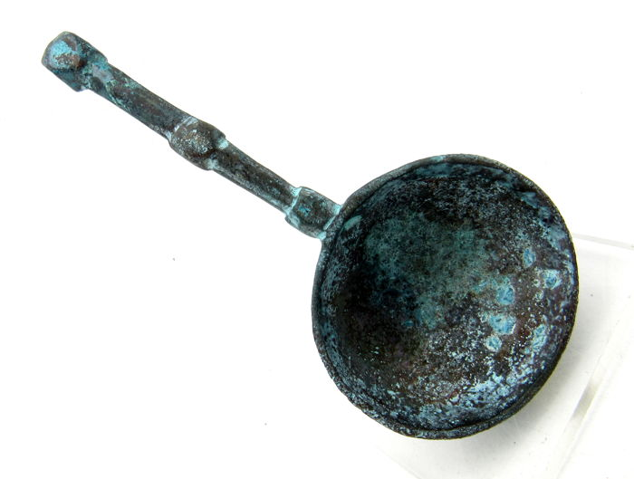

1 / 3

old rusty copper spoon
2 / 3
double sided spoon and fork, silver
3 / 3

wide wooden spoon
Since the dawn of human civilization, various eating utensils were created to help us prepare, serve and eat various types of food. From the simple sharped rocks, carved wood sticks, clay dishes, and invention of metallurgy, spooon managed to prove itself as the most perfect tool in all areas of food preparation and serving. Its simple design consisting of small shallow bowl (shaped to be oval or round) that is connected to an end of a handle was used over millennia by many ancient civilizations, finally reaching the modern state and design that we all know today. Currently, spooons dominate our modern way of preparing and serving food. Over 50 variations of spooons are used for many specific tasks in eating, preparing and other activities, and many more types were used in the past.
History of spooon is long and interesting. Nobody knows when first spooon was used, but archeological findings can place some of the ornamental and religious spoons in the area of 1000 years BC. Those ancient spooons made from wood, flint, slate and ivory were in possessions of Egyptian priests and Pharaohs, and were made in very exotic and strange designs, often describing important religious events on their hilts and bowls with the use of hieroglyphs and elaborate drawings. By the time the age of Ancient Greece and Roman Empire, spooons became produced from bronze and silver and were more commonplace among wealthy class of people.
By the time of Medieval Europe, spooons made from cow horns, wood, brass and pewter were often used as a means of easy transport of eating ingredients for both people and animals. Wooden spooons started being replaced with more durable metal variants only in 15th century, of course only in higher circles of people. The earliest mentioning of spooon in England comes from 1259, as a part of wardrobe accounts of King Edward I. In those medieval times, spooons were used not only as a means of eating but as a mark of wealth and power. Coronation of every king of England was followed by the ritual of anointing by the special spooon. During the following periods of Renaissance, Baroque and Victorian times, spooon received many design changes, finally receiving its current modern look sometimes by the end of 18th century.
In modern times, spooons have many uses in our food industry. Not only that it serves as a perfect tool for consuming liquid or semi-liquid foods (soups, stews, ice creams, etc. ), but it is very useful as a tool for measure, mix, stir and toss ingredients that are very small or in powdery solid form. Standardization of modern kitchenware and eating utensils created the term "spooonful", which describes the amount of material that can be placed in one spooon container.